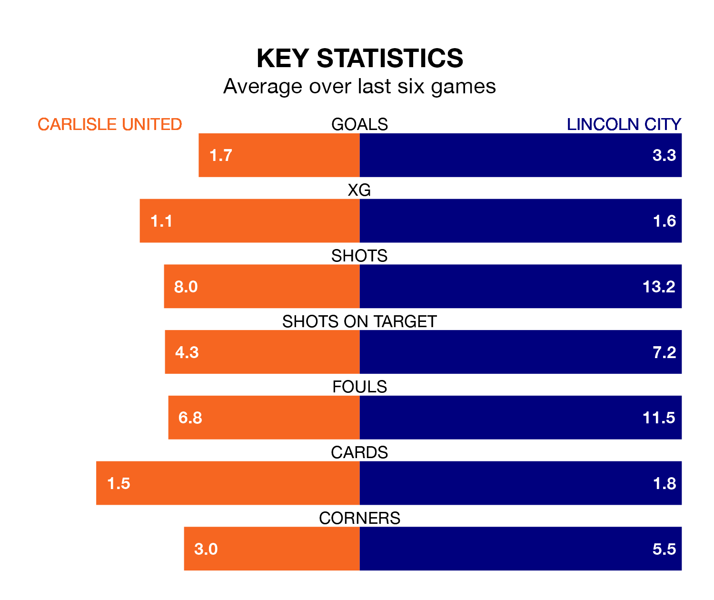

Struggling Carlisle United face Lincoln City at Brunton Park on Monday looking to build on a win in their last league outing.
After securing all three points with a 3-1 victory over Peterborough United on Friday, Carlisle sit bottom of EFL League One.
They travel to play a Lincoln side sixth in the standings, who also won their last match, 1-0 against Leyton Orient.
With Lukas Jensen between the sticks, Lincoln can rely on one of the league's safest pair of hands. He has kept 18 clean sheets in his 40 appearances this season, and no 'keeper has prevented the opposition scoring more often in EFL League One.
In Carlisle's net, Jokull Andersson has one clean sheet in six games. He has conceded a goal every 80 minutes, 50% more often than the 120 minutes between goals for Jensen.
United are in bad form in EFL League One, with one win and a draw from their last six games.
With five wins and a draw over that period, City's form is much better – they have taken 16 points from 18, compared to the home side's four.
In the last 10 years, Carlisle and Lincoln have played each other on seven occasions. Carlisle won one of them, Lincoln three, and they drew three times.
On average, Carlisle scored 0.9 goals and the Imps 1.6 in those matches.
Their last meeting was on September 16, when they played out a 1-1 draw.
With 38 goals in 40 games so far this season, Carlisle are scoring at below the league average rate with 0.9 goals per game. And they are conceding more than average, letting in 70 goals at a rate of 1.8 per game.
The Imps, meanwhile, are above average scorers, with 1.4 goals per game, compared to a league average of 1.3. They have conceded 0.8 goals per game.
Monday's match will be refereed by Seb Stockbridge, who has taken charge of seven EFL League One games so far this season, issuing one red card and booking 36 players. He has awarded five penalties.
The last Carlisle game Stockbridge refereed was a 3-1 away win against Bolton Wanderers on October 7. He is yet to oversee a match featuring Lincoln this season.
Updated: 10:31 (UTC), 31/03/24